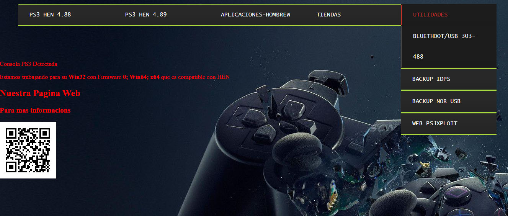

PS3 Audio por USB o Bluetooth
Podemos usar audífonos por USB o por Bluetooth con esta sencilla aplicación en nuestra consola PS3 ya que por defecto no podemos realizar este procedimiento con muestro audífonos.
Para esta Guia
Requisitos para este tutorial
- USB en formato FAT32
- Para activar esta funciona
- Para activar esta función vamos a navegar de nuestra consola 
- Nuestra WEB Para la consola: Nuestra WEB
- Nuestra WEB Para la consola: TheWizwikii
- Una vez descargado nuestro archivo de forma automática
- Nuestra consola se reiniciará
- la otra opción es descargar el archivo .pkg
- seleccionamos el archivo .pkg Install para instalar
- dependiendo de la versión instalada en nuestra consola
- y el archivo .pkg restore es para desinstalarlo
- lo copiamos a nuestro USB y lo instalamos en nuestra consola
- Para agregar nuevos o configurar
- Vamos a
Ajustes/Ajuste de accesorios/Administrar dispositivos Bluetooth - Y iniciamos un escaneo para buscar dispositivos disponibles (no todos pueden ser compatibles)
- Seleccionamos el dispositivo y lo agregamos
- Las claves por defecto pueden ser 0000 o 1234 para la mayoría de dispositivos
- Para la configuración de la salida de audio
- Vamos a
Ajustes/Ajuste de accesorios/Ajustes de dispositivo de audio - Y nos vamos a
dispositivo de saliday seleccionamos nuestros audífonos - Con esto podremos sacar el audio de los juegos en nuestros audífonos no del menú
- Para que funcione solo tenemos que activar HEN en nuestra consola PS3 y a disfrutar
Empezando este Tutorial
×